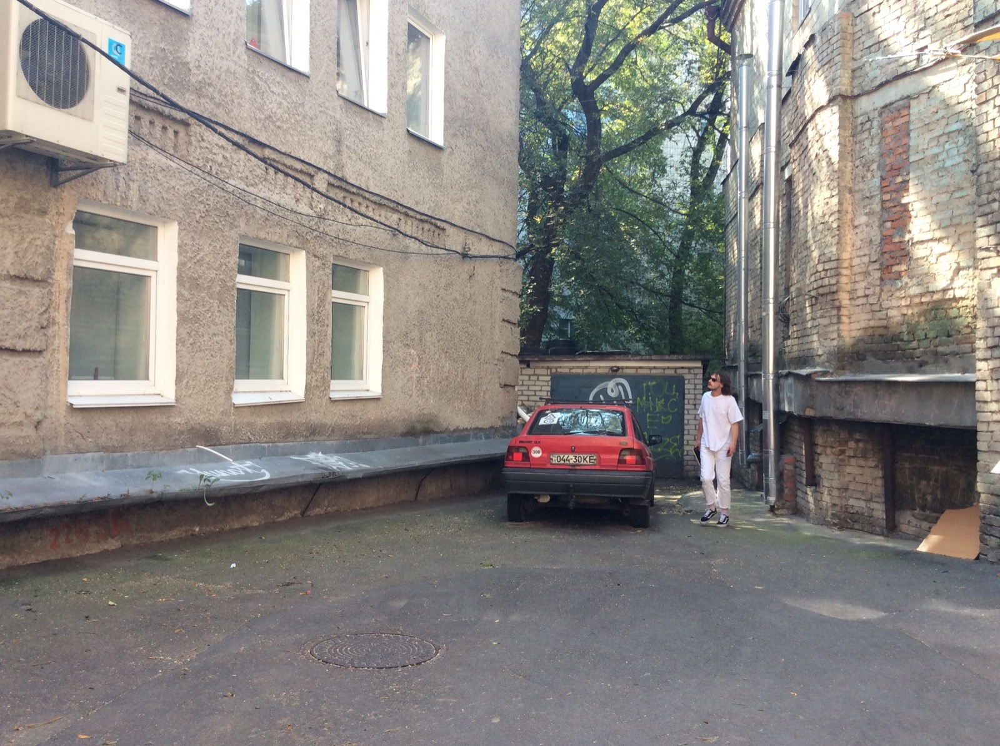
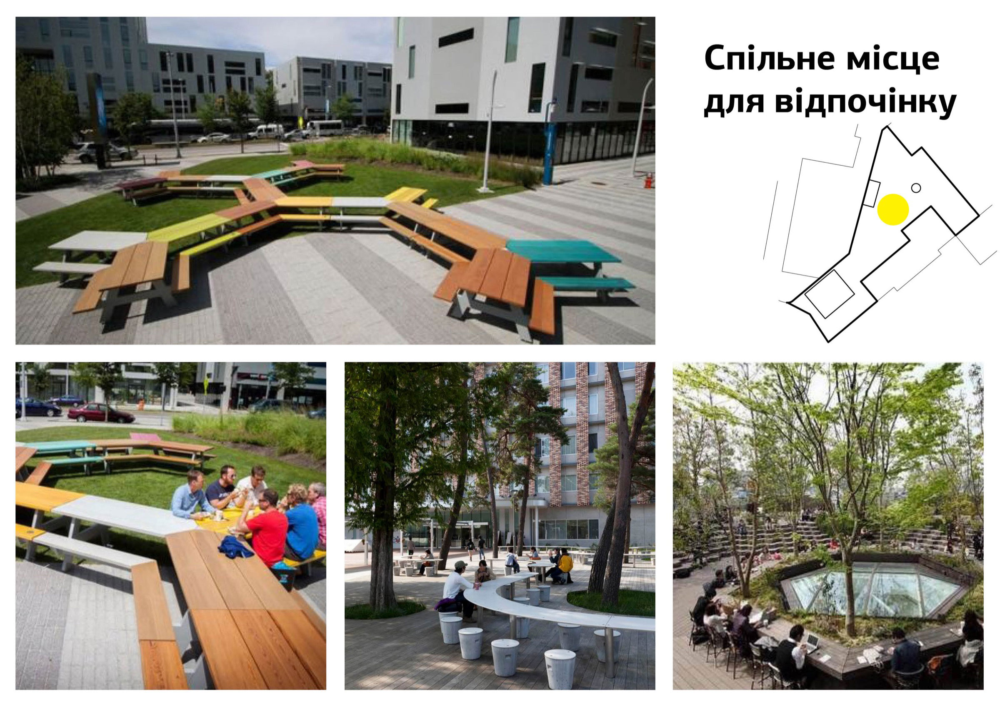
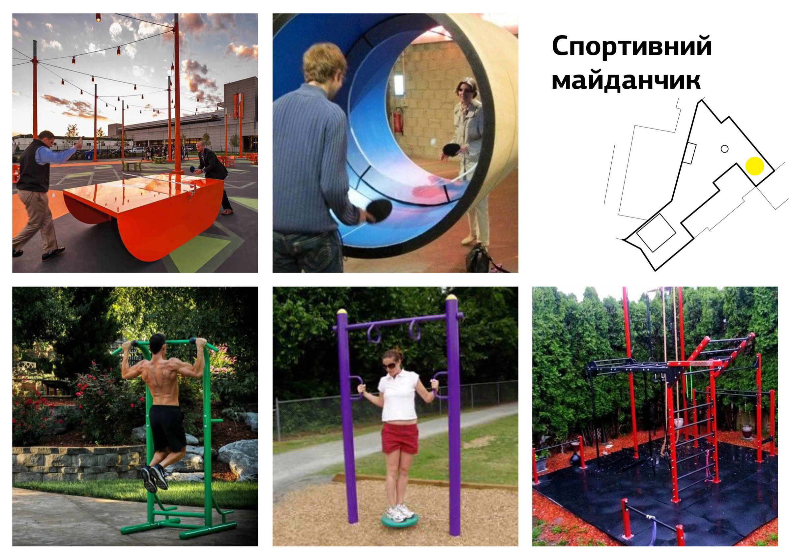

Листопад 2017
Концепція двору на Ярославовому валу
Разом зі студентами курсу Urban Design ми розробили концепцію облаштування двору за адресою Ярославів вал, 9. Ми спілкувались з користувачами, щоб виявити їхні потреби, знайшли у дворі конфлікт інтересів і придумали, як його вирішити. На основі цього розробили три концепції публічних просторів, що можна облаштувати у подвір’ї.
Контекст
Двір знаходиться в центрі Києва, у п’яти хвилинах пішки від метро Золоті Ворота. До нього веде арка, що освітлюється в нічний час. У дворі розташовані бар «Малевич», ремонтна майстерня «Apple Hub» і шоурум «Модерніст». Тут призначають зустрічі, п’ють каву і вино, відпочивають від міського шуму та роботи. Бар «Малевич» занесено до туристичних путівників, тому сюди заходять туристи.
Виклик
Разом зі студентами ми прагнули створити простір, яким люди користуватимуться із задоволенням. Тому важливо було зробити не просто красиву картинку, але і розібратись у ситуації, добре вивчити користувачів подвір’я, з’ясовуючи яка потреба стоїть за будь-яким запитом.
Дослідження
Дослідження розпочали з вивчення локації. Фотографуємо все: загальний вигляд подвір’я, припарковані машини, терасу бару, двері чорних ходів, пожежні драбини та кожну дрібницю, яку варто врахувати при подальшому проектуванні. Так ми не втратимо важливих деталей та позбавимося необхідності повертатися на місце щоразу, коли потрібно буде щось згадати. Паралельно робимо перші припущення, які перевіримо під час інтрев’ю з користувачами.
Вікна будинків більше схожі на офісні, фіранки є тільки на верхніх поверхах — припускаємо, що будинок майже не жилий, а основні користувачі — офісні працівники. Тепер цю гіпотезу треба перевірити.
Одразу ж помічаємо одну з головних проблем подвір’я: сміттєві баки займають дуже багато місця, погано виглядають і ще гірше пахнуть.

У подвір’ї паркуються машини. А ось ця, судячи з вигляду, стоїть тут нерухомо вже давно.
Кожна група студентів заздалегідь готує плакати, які розміщуємо на помітних місцях: при вході у подвір’я, на дверях бару та на стіні будинку. Окрім зворотнього зв’язку плакати несуть ще одну не менш важливу функцію — повідомляють людей про те, що тут відбуватиметься.

Головне — у заголовку. Подробиці — у тілі оголошення.

Тут плакат захищений від дощу, тому збережеться довше, його побачить більше людей.
Далі необхідно з’ясувати, хто користується або може користуватись двором, але з певних причин цього не робить. Починаємо з найочевиднішого — просто знаходимо інформацію про орендарів на вивісках з фасаду будинку. Контакти інших стейкхолдерів отримуємо у ході інтерв’ю з співвласником бару.
Проводимо інтерв’ю з Андрієм — співвласником бару «Малевич».
Інформація про орендарів на фасаді будинку.
Впродовж декількох днів спілкуємося з усіма: представниками громадських організацій, що орендують офіси у будинку № 9, адміністраторами хостелу та автошколи (їх вікна виходять у подвір’я), працівниками і відвідувачами бару, шоуруму та майстерні. Не виходить зустрітися тільки з головою ОСББ будинку № 9, але нам вдається поспілкуватися з його помічниками.
Кожне інтерв’ю починаємо з того, що дізнаємося загальну інформацію про людину: чим займається та цікавиться — це необхідно для того, щоб скласти портрет представника цільової аудиторії та краще зрозуміти його потреби. Далі з’ясовуємо сценарії взаємодії із подвір’ям: коли людина приходить сюди, чим тут займається, із якими проблемами та незручностями при цьому стикається. Вже після цього можна переходити до конкретики — поцікавитись, що саме на місці подобається, а що варто було б покращити.
Найкорисніше запитання під час інтерв’ю — «чому». Воно дозволить зрозуміти суть потреб користувача, а не просто почути конкретний запит.
Все фіксуємо на диктофон, щоб у разі необхідності повернутися до почутого та уточнити деталі. Обов`язково питаємо дозволу у кожного перед тим як почати запис.
Висновки досліджень
Головне, що студенти виявили під час дослідження — конфлікт між користувачами подвір’я: орендарі офісів будинку № 9 не можуть примиритися з діяльністю бару, нарікають на шум та загалом не задоволені тим, що відбувається.
Працівники та відвідувачі «Малевича» пояснюють, що не можуть нічого вдіяти з шумом — звуки навіть тихих розмов відбиваються від стін та створюють голосне відлуння. Самі ж скаржаться на те, що не можуть проводити у барі кінопокази, лекції та тематичні вечори через конфлікти з представниками будинку.
Користувачі також не можуть вирішити питання з машинами: якщо бар виставляє столи на вулицю, стає неможливо проїхати через подвір’я, щоб припаркуватись.
Ось які загальні скарги ми почули від більшості опитаних:
- немає місць для відпочинку;
- бракує зелені;
- смітники займають багато місця, погано пахнуть (особливо влітку) та псують вигляд подвір’я.
Найочевидніша гіпотеза — подвір’я не облаштоване для відпочинку — підтвердилася, але виявилося, що причина не тільки в цьому. Ми дізналися, що члени громадських організацій (вони становлять більшість орендарів будинку № 9) просто не почуваються достатньо вільно, тому майже не використовують подвір’я для своїх потреб.
Скарги, ідеї та побажання, що лунали під час інтерв’ю, ми використаємо щоб зрозуміти цілі та сценарії взаємодії з подвір’ям.
Аналіз отриманих результатів
Наступний етап починаємо з того, що виділяємо групи серед користувачів подвір’я. З них обираємо ключові — вирішуємо, спираючись на те, наскільки часто вони користуються або могли б користуватись простором. Таких виходить дві: орендарі будинку № 9 та представники бару «Малевич».
Кожну з двох груп має представляти персонаж — узагальнений образ, що поєднує у собі ключові риси та потреби членів цільової групи. Персонажі допомагають проектувати простір під реальних користувачів. Цілі персонажа пояснюють для чого використовується подвір’я, а сценарії показують як саме людина це робить.
Для подальшої роботи з персонажами користуємося технікою Value Proposition Design. У кожного персонажа є набір параметрів, за яким ми аналізуємо процес його взаємодії з простором:
- Завдання (Jobs) — що конкретно користувачі роблять або хотіли б робити у дворі.
- Болі (Pains)— проблеми, пов’язані з використанням або невикористанням двору.
- Здобутки (Gains) — позитивні враження, які користувачі отримують або хотіли б отримувати від двору.
Проаналізувавши ці параметри формулюємо пропозицію з таких складових:
- Продукти та сервіси (Products and services) —те, що хочемо запропонувати користувачам для ефективнішого вирішення задач.
- Знеболюючі (Painkillers) — рішення, які можуть пом’якшити або усунути проблеми двору.
- Генератори вигоди (Gaincreators) — як запропоновані продукти і сервіси принесуть користь користувачам, враховуючи очікування або навіть передбачаючи їх.
Оброблюємо дані, отримані з інтрев’ю: найзручніше працювати зі стікерами — на них виписиуємо інформацію тезово, ранжуємо та групуємо.
Проаналізувавши портрети, що у нас вийшли, розуміємо, що у користувачів з обох груп дуже багатого спільного: вони мають схожі потреби та вирішують схожі задачі, які було б просто задовольнити, співпрацюючи. Головне, що їм заважає — непорозуміння.
Цей інсайт змінює фокус роботи. Тепер ми маємо не просто проектуємо комфортний простір, а маємо розробити рішення, які владнають конфлікт та дадуть поштовх для формування спільноти подвір’я.
Концепції
Настав час поговорити про конкретні рішення: вони мають задовольняти потреби користувачів, при цьому спонукаючи їх до примирення та співпраці.
На цьому етапі кожна з трьох команд, на які була поділена група, має розробити та представити власний погляд на благоустрій подвір’я.
Важливо наглядно та доступно презентувати результати роботи, щоб цільовій аудиторії було зрозуміло що ми пропонуємо, а головне — чому. Плани та візуалізації мають бути простими і розбірливими, а кожне рішення обгрунтоване результатами досліджень.

Концепція «Балансування»
Ця концепція складається з двох частин:
1. Налагодження відносин
Пояснити конфліктуючим сторонам, навіщо їм потрібно вчитися користуватися двором разом. Цю частину концепції студенти хотіли реалізувати на презентації проекту, безпосередньо у дворі та за участі всіх стейкхолдерів. Ми планували показати, що в обох сторін є спільні потреби. Освітити, що отримає кожна зі сторін, якщо вони почнуть співпрацювати. Показати приклади, як користуватися спільним простором.
2. Організація двору
У нас не було цілі зробити чітке зонування для окремих груп людей. Це тільки б підсилило конфлікт. Тому студенти шукали баланс між спільним та приватним простором у дворі, де кожен міг би почуватися комфортно. Для цього вони створили макет, на якому наочно продемонстрували розроблені рішення.

Головним елементом цієї концепції став мобільний екран. Під час заходив він виконує роль екрану, в інший час його можна використовувати як барну стійку. Для шумоізоляції використовуємо вертикальне озеленення стін та шумозахисні екрани.
Наявна ситуація

Концепція з екраном

Концепція «Спільний стіл»
Ідея концепції — посадити людей за спільний стіл, примиривши їх. Команда вирішила створити серію з трьох заходів, які дозволять сусідам потоваришувати, поспілкувавшись у рослабленній обстановці.
Перший захід — млинці, вечірка в центрі двору. Маємо намір просити бар «Малевич» ініціювати цей захід. Поки немає столу, його можна зробити тимчасово. Корисніше спочатку створити звичку збиратися в цьому місці, а потім встановити там спільний стіл.

Другий захід — освітній. Знання першої медичної допомоги корисна навичка. Плануємо просити провести майстер-клас сусідів з громадської організації.
Третій захід — презентація нашого проекту. На цей ми вже маємо розуміти наскільки люди готові сісти за один стіл.

Ось як студенти вирішили організувати простір подвір’я:
- Головне в проекті — це спільний стіл для гостей кафе «Малевич», співробітників і мешканців сусіднього будинку та додаткові місця для відпочинку, якщо буде потреба усамітнитись.
- Організована парковка для декількох автомобілів та велосипедів, що врегулює непорозуміння з автовласниками.
- Місце для спортивного майданчика з тренажерами і тенісним столом — заохочення частіше проводити час у дворі.
- Зона для проведення лекцій та кінотеатр. Корисне і пізнавальне проведення часу у дворі.
- Майстерня в гаражі, де можна було б робити меблі для облаштування подвір’я. На наш погляд спільна справа ще більше згуртувала б сусідів.
- Озеленення двору, навіси і перегородки створили б затишок, шумоізоляцію та тінь.
- Сміттєві баки вирішили перенести на вулицю.
Концепція «Поєднання»
Головний напрямок роботи у цій концепції — примирення користувачів. Саме цим і продиктовано кожне рішення.
Головна ідея — відсутність зонування за групами користувачів. Концепція будується навколо спільної багатофункціональної зони відпочинку у центрі подвір’я. Це навчить людей разом користуватися простором.
Студенти виділили окремі місця під парковку та столики «Малевича», розвівши їх у протилежні частини подвір’я. Цим вирішили одразу дві проблеми:
- столи більше не заважають паркуванню, це запобігає конфліктам;
- з’явилося багато місця для відпочинку у центрі подвір’я.
У центральній зоні розташовані місця для відпочинку з мобільних багатофункціональних меблів. Ця зона при необхідності трансформується у зал кінотеатру-лекторію. У голові залу встановлюється екран, що можна легко поставити, пересунути чи прибрати.
Проводити події у кінотеатрі-лекторії користувачі мають за розкладом, який складуть разом. Для обговорення цього розкладу та інших важливих питань пропонуємо обрати від кожної сторони по одному або декілька делегатів. Це дозволить домовлятися легше та ефективніше, зробить вірогідність конфлікту мінімальною.
Ще одна причина конфліктів — звуки, що відбиваються від стін. Цю проблему вирішуємо шумоізоляційними тентами. Студенти пропонують встановити їх над зоною відпочинку та столиками бару — головними джерелами звуку у подвір’ї.
На останок — сміливий крок: взагалі прибрати машини з подвір’я. Це звільнить ще більше місця, яке можна використати багатьма способами: облаштувати ще одну зону для відпочинку, коворкінг під відкритим небом чи зону для настільних ігор та читання.
Підготовка до презентації
Презентація концепцій — один з ключових етапів проекту. Задачі презентації:
- ознайомити людей з нашими ідеями та дослідженнями, на яких вони засновані;
- залучити користувачів до обговорення;
- протестувати прототип одного з рішень;
- зробити перший крок до примирення користувачів подвір’я.
Тестувати вирішили мобільний кінотеатр-лекторій: це рішення фігурує в усіх концепціях як одне з центральних, а його прототип досить легко виготовити у наших умовах. Презентацію та обговорення збираємося провести саме там.
Плануємо презентацію. Хочемо отримати зворотній зв’язок та додати у цю серйозну подію трохи свята: прикрасити двір, організувати чай, каву, печиво, та умови для неформального спілкування користувачів подвір’я.
Далі буде?
Для впровадження проекту подтрібна підтримка всіх стейкхолдерів. Головною перешкодою стало те, що нам не вдалося домовились з усіма: голова ОСББ, з яким ми так і не поспілкувались під час досліджень, зустрівся з нами, коли концепції були вже готові. Він був проти реалізації проекту, знайти спільну мову ми так і не змогли. Тому жодна з концепцій досі не дійшла до етапу реалізації.
Висновки
- Почніть з вивчення простору: як слід роздивіться локацію, обов’язково фотографуйте — так можна буде освіжити в пам’яті важливі деталі, не повертаючись на місце.
- Поспілкуйтесь з усіма, хто користується або може користуватися місцем, яке ви плануєте змінити. Якщо таких занадто багато, проведіть інтерв’ю хоча б із декількома представниками кожної цільової групи.
- Інформуйте. Людям необхідно знати, що незабаром тут відбудуться зміни. Якщо місце невелике (наприклад, подвір’я), можна використати інформаційні плакати.
- Користуйтесь персонажами. Це допоможе розробити проект, спрямований на реальних користувачів, та краще їх зрозуміти.
- Шукайте потреби, а не виконуйте запит. Якщо жителі просять поставити паркан, з’ясуйте яка за цим стоїть потреба та задовольніть її найбільш конструктивним рішенням.
- Будьте гнучкими. Задача проекту часто трансформується під впливом нових даних. Це нормально.
- Не проектуйте зайвого. Переконайтесь, що кожен елемент концепції вирішує певну задачу та відповідає меті проекту.
- Переконайтесь, що вас підтримують усі, хто вирішує долю місця, яке ви хочете змінити.
Поширити
Надіслати
+1
Запінити